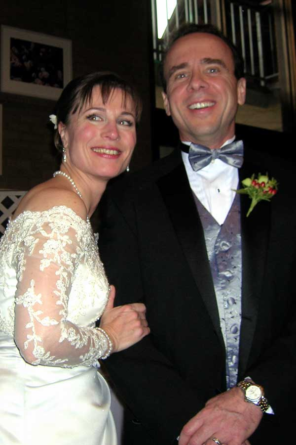

SpearheadNews.com
Super News
2007

Casting News
Events
Rehearsal Schedules
Interviews
Photos
Reviews
More Fun Stuff!
The
Super Handbook
San
Francisco Opera
Links
Classifieds
Contacts
Archives
Members Only
Spearheadnews.com is not officially affiliated with any
performing arts organization.
All photographs remain the property of their copyright holders.
©2007
SpearheadNews
All Rights Reserved
Joe Giammarco and Claire Kelm - a Super Wedding
The majesty and
grace of Stanford Memorial Church was the setting for the marriage of
Super Joseph Giammarco and Chorister Claire Kelm
on Saturday, January 28. Surrounded by family and friends, including their
San Francisco Opera and Lamplighters colleagues. Joe and Claire exchanged
their vows in a simple yet elegant ceremony.
The music for the ceremony was an inspiring mix of Gilbert & Sullivan,
opera and early music with several conductors, including Maestra Sara
Jobin. There were scores of singers from the Lamplighters and
San Francisco Opera Chorus, including soloist Mary Finch,
who sang "The Call," from Five Mystical Songs by Ralph
Vaughan Williams. Opera Chorus members provided a rousing "Bridal
Chorus" from Lohengrin. Perhaps the most inspiring was the
final piece, Ein Deutsches Requiem, Op. 45, by Johannes Brahms,
sung by the entire congregation, bringing tears to the eyes of the bride
and groom.
A reception followed at the Stanford Faculty Club. Among the Supers spotted
in the crowd were Ron Mann, accompanied by partner, singer
Melody Dalton; Kimberly Thompson, Keith
Clausen, Steve Bauman with his wife, singer
Delia Voitoff-Bauman; Charlie Lichtman;
my partner Joe Nesci and myself.
- Paul Szczesiul
The
air was filled with the exalting voices of our fabulous Opera chorus
and
Lamplighters stars and all the love and joy of family and friends. The
bride and groom made the entrance of their careers; it was the best
production
of 2006. The groom's mom, the Chorus women's circle, and the Fred and
Ginger of the Super world (Joe Nesci and I) vied for twirling space
on
the dance floor. We have to do this more often!
-
Kimberly Thompson
Feel free to send your good wishes and congratulations to Joe and Claire.